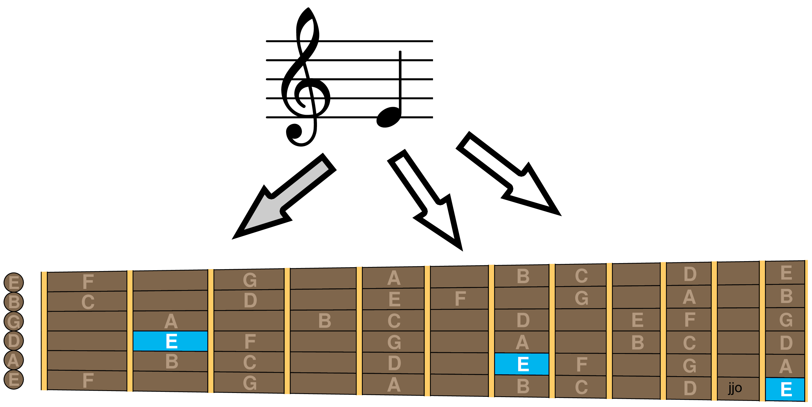
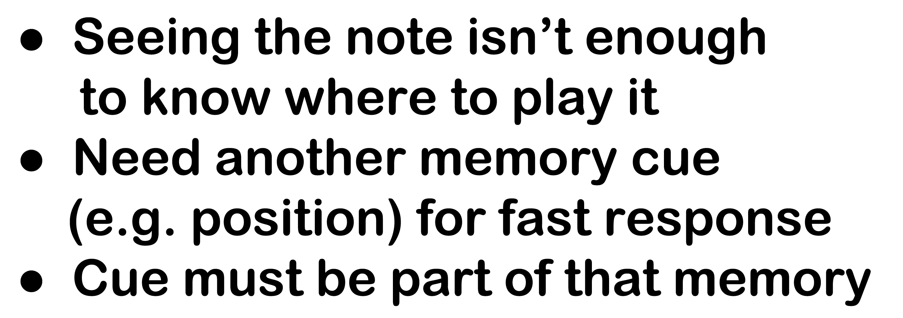
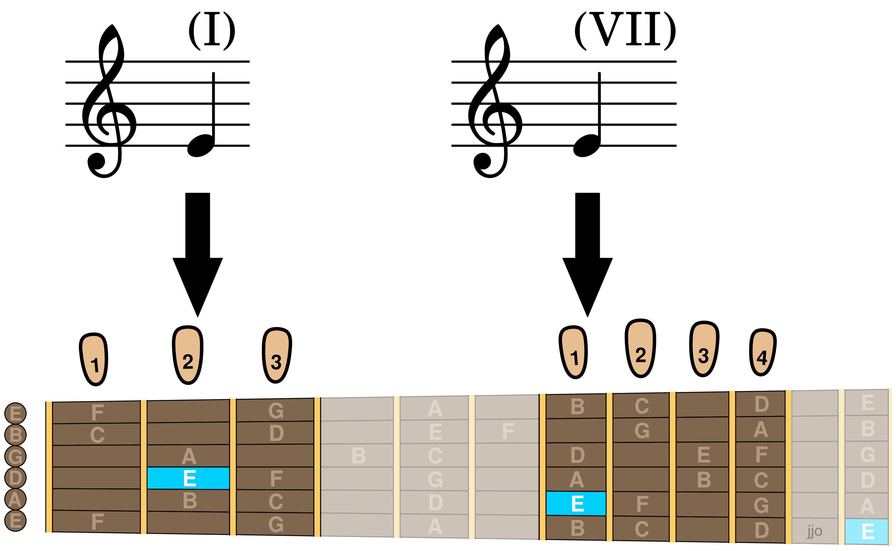
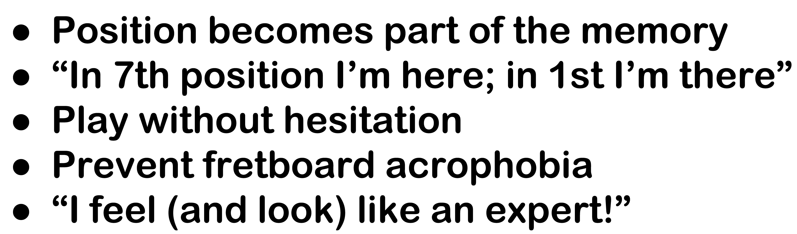

This is where other methods oversimplify the truth by starting with just one position. The truth is most notes can be played in multiple places, which requires a different mental model. Teaching two positions builds that mental model from the start.
Starting with just one position (gray arrow below) leaves position out of the thought process when thinking where to play a note. That myth has to be unlearned to sightread in higher positions (white arrows).


But teaching two positions together from the start breaks the myth of uniqueness, resulting in strong mental associations (black arrows) that will last a lifetime.


In addition to its psychological benefits, seventh position is the only higher position on the neck where the full scale of natural notes can be played without stretching out of position. It's also easier for smaller hands to play than first position. Seventh is sweet for beginners.